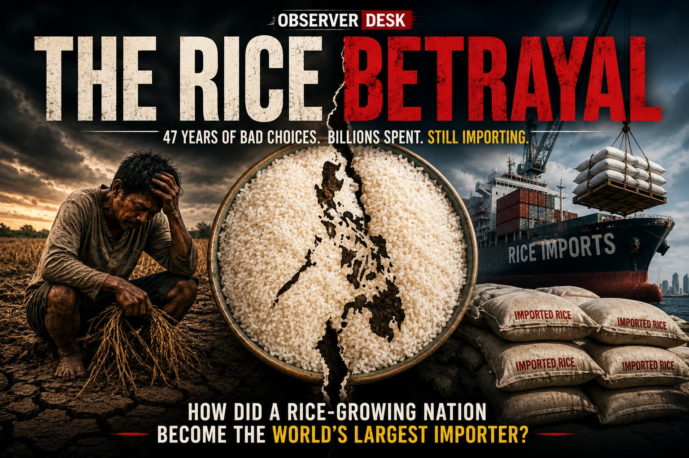

Noynoy Aquino and Bongbong Marcos Are the Same... In Some Ways
Their supporters see them as opposites. Yet a closer examination of their rise to power, governance records, and political coalitions reveals striking similarities.

Noynoy Aquino and Bongbong Marcos Are the Same... In Some Ways
Their supporters see them as opposites. Yet a closer examination of their rise to power, governance records, and political coalitions reveals striking similarities.

THE RICE BETRAYAL
How a state monopoly, compromised land reform, and decades of missed opportunities left the Philippines dependent on imported rice.

THE PANGILINAN LAW FAILED TWICE: NO PREVENTION, UNDERFUNDED REHABILITATION
CICL cases fell 84% from 2017-2024 despite RA 9344, not because of it. We never invested in keeping kids out. We barely funded helping them after.

Losing the Public's Trust
An Industry-Wide Decline in Confidence in Philippine Journalism

P*tang Ina, Ako 'To!
He earns more than most Filipinos. So why did he lie to his son about ₱40? A life of an average Juan.

The Prestige Scam
How Awards like NOBEL Stopped Signaling Excellence—and Started Manufacturing Legitimacy

“Not My Job to Write Lesson Plans”
A Senate hearing, a viral backlash, and the collapse of Risa Hontiveros' Adolescent Pregnancy Bill

When Congress Holds the Purse, Who Watches the Spenders?
A PGMN investigation into Martin Romualdez and the House budget asks: How much visibility do we get into the chamber that writes the national budget?

The 2005 Pre-Need Crisis: Did Regulation Save Policyholders, or Sink Them?
Thousands of Filipino families trusted CAP and Pacific Plans to secure their future. But when the industry collapsed in 2005, a regulatory fix meant to protect consumers may have accelerated one of the worst losses of savings in modern Philippine financial history.

Philippines Should Consider a Parliamentary Republic
Stronger institutions, empowering provinces, and creating a government that works beyond election cycles.

The Senate Has a Leader. Does It Have a Legitimate One?
The debate over the June 6 quorum is no longer just political. It is a constitutional question about de facto authority, legal legitimacy, and who should ultimately decide.

"You Used AI": The New Way to Dismiss an Argument
Political correctness, AI-assisted writing, and the importance of judging ideas rather than presentation.

Friends to All, Enemy to None
Has the Philippines Chosen Geopolitics Over Development?

Who Decides Who Counts?
The Constitution Already Did: Objective Facts, Not Political Judgments.

The Forgotten Senator
The senator whose absence is often overlooked in modern retellings of Avelino v. Cuenco.

Politics of Permanent Advantage
Patrimonial plunder, institutions, and the enduring relevance of Lee Kuan Yew.

Dengvaxia: The Children Who Never Came Home
Revisiting the Philippine Dengvaxia crisis a decade later.

Keeping the Human in Human Judgment
Using AI to challenge narratives, not replace human judgment.

The Playbook
The recurring pattern behind political movements in Philippine history.

The Risk Behind a Senate Quorum of Twelve
How democracies traditionally respond to quorum crises.

IBP: A Neutral Institution or a Captured Institution?
Participation, influence, and representation within the legal profession.

Davao Is Not Singapore.
The comparison was never about skyscrapers. It was about governance.
Think Beyond the Narrative
Observer Desk is an independent publication examining politics, institutions, governance, media, and public affairs through context, evidence, and critical thinking.
The objective is not to tell readers what to think, but to encourage deeper examination of the assumptions, narratives, and institutions that shape public understanding.